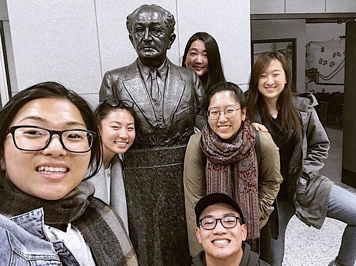
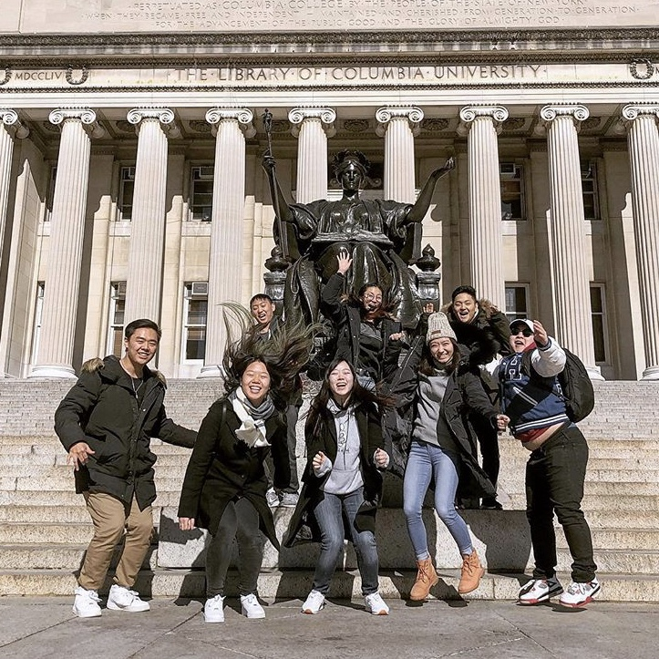
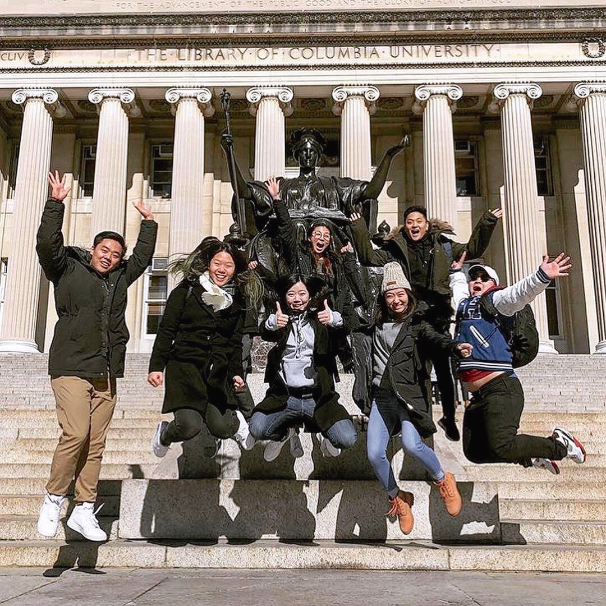

Stony Brook is not the only university with Soon Movement on campus. Soon Movement is available on campuses in both the west coast and east coast. Schools such as NYU, Columbia, St. John’s, and Queen’s College, in the North East region, all have a Soon Movement campus ministry.
Gethsemane is a great opportunity for all campuses to come together so that we can pray for the campus, region, and nation as whole. At Gethsemane we also have a time of worship, a short word or sermon from a Soon Movement Staff, and a time of personal and corporate prayer.
If you need an environment to comfortably worship and also pray, Gethsemane is a perfect place for that. You can find great brothers and sisters from other campuses and relate + share how ministry and life is on various campuses.
BDT stands for Basic Discipleship Training. Soon Movement offers this short training for students to learn how to make disciples and share the gospel of Jesus Christ on campus. Students would come together from their prospective campuses and study the bible and the gospel together. They would go to workshops to learn how to approach and talk to other students about the gospel and invite them to learn about it. The training is led by staffs of Soon Movement and it is a great opportunity to learn how to get out of our comfort zone and share + converse with others on campus.
Back to site